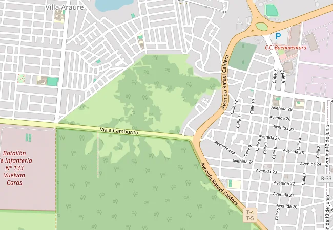

68 %
de 134 semáforos funciona
Unas 43 intersecciones operan sin control, con tecnología de alto consumo que colapsa con el racionamiento.
Panoptes mantiene semáforos y cámaras encendidos durante los apagones, une en un solo mapa las cámaras públicas y las de los comercios, y usa inteligencia artificial local para avisar a tiempo cuando alguien se desmaya, hay un choque, se escucha un grito de auxilio o una multitud corre peligro.

traffic videocam videocam storefront personal_injuryPersona caída · parada Av. principal
Inmóvil 41 s · PTZ orientado · ambulancia notificada tras confirmación del operador
Datos del estudio de campo realizado a peculio propio por ingenieros de Electro Shop Morandin C.A. en el Municipio Piloto, estado Portuguesa.
68 %
Unas 43 intersecciones operan sin control, con tecnología de alto consumo que colapsa con el racionamiento.
hasta 6 h
Las intersecciones quedan a oscuras justo cuando más aumentan los siniestros viales y las oportunidades para el delito.
Aisladas
Cada sistema graba por su cuenta: nadie reconstruye en tiempo real la ruta de escape de un delincuente.
Minutos
Un golpe de calor en una parada o un motorizado caído de noche pueden pasar inadvertidos. En una emergencia médica, cada minuto cuenta.
Conectividad inestable. El robo de cable y los enlaces caídos obligan a que la solución siga funcionando aunque se caiga internet.
Presupuesto público limitado. Por eso Panoptes se financia con publicidad y reduce el consumo eléctrico de la red semafórica.
En la calle, un nodo que no se apaga. En el poste, una IA que no necesita internet. En la central, una persona que decide con toda la información en un mapa.
Dispositivo de Seguridad Inteligente Panoptes: una estación urbana en cada punto crítico.
Addon de IA que corre en el propio poste y en la central, sin enviar video a internet.
Centro de Comando y Control Inteligente donde converge todo en un Mapa Vivo.
1 · Capta
Cámaras, micrófono y sensores del nodo
2 · Analiza en el poste
La IA procesa localmente; el video no sale del nodo
3 · Envía el evento
Unos KB por fibra, radio P2P o 4G de respaldo
4 · Confirma una persona
El operador del C3I valida con el video en vivo
5 · Despacha
Policía, Protección Civil, Bomberos o ambulancia
Controladores ESP32 a 110 V, relés de estado sólido y gabinetes IP65.
Motor Panoptes Core (mapas, ANPR) y addon Panoptes Vital IA.
Radioenlaces P2P Ubiquiti, fibra municipal y 4G multioperador.
Monopostes galvanizados, canalizaciones y puesta a tierra.
El problema, la solución y el modelo de inversión, resumidos para compartir con cualquier autoridad.
shareCompartir por WhatsAppGire, acerque y toque cada componente. Active el modo apagón para ver qué sigue encendido, la vista IA para ver lo que detecta la cámara, o el despiece para abrir el gabinete.
Cargando modelo 3D…

Toque un equipo para ver sus especificaciones.
El C3I recibe los eventos de todos los nodos y de las cámaras comerciales afiliadas, los ordena por gravedad en el Mapa Vivo y deja la decisión final en manos de un operador capacitado.

Perfil de Técnico en Informática o afín, con 2 meses de capacitación intensiva de Electro Shop y formación continua.
Las alertas se integran al protocolo de despacho del VEN 911 y al 0-800-3986774, sujeto a convenio con el MPPRIJP. Mientras tanto, el C3I despacha a los cuerpos municipales y estadales.
UPS de doble conversión para la transición y planta eléctrica con transferencia automática (recomendada) para cubrir cortes de 6 horas.
Toque una imagen para ampliarla.
Cablear una ciudad desde cero toma años. Panoptes integra, con permiso y por ordenanza, las cámaras exteriores de licorerías, farmacias, clínicas y centros comerciales, y las coordina con los nodos DSIP para cerrar puntos ciegos.
Modo pasivo: cada comercio conserva su video cifrado; no se consume ancho de banda municipal.
30
cámaras públicas
(10 nodos × 3)
~100
cámaras comerciales
(meta fase 3)
~130
puntos de visión
en el Mapa Vivo
El Estado invierte en los nodos DSIP; la red comercial densifica el mapa a costo cero de hardware.
Solo cámaras exteriores, nunca interiores. La adhesión se incentiva con descuentos en la patente, nunca se impone.
Un addon que corre dentro del propio nodo y en la central, sin enviar video a internet. Detecta situaciones de riesgo y se las presenta a un operador humano, que es quien decide.
Procesa en el poste
Funciona sin internet y en apagón: solo viajan eventos de pocos KB.
No graba conversaciones
El audio se clasifica en memoria y se descarta en 2 segundos.
Multitudes solo en números
Conteo y densidad agregados: nunca identifica asistentes.
Decide una persona
La IA sugiere; el operador confirma antes de despachar.
IA-01
Pruebe un escenario
Cada módulo se calibra con datos de calles venezolanas y filtra los falsos positivos típicos de nuestra realidad.
Reutilizan las mismas cámaras, sensores y servidores. Se activan por fases según la necesidad y el presupuesto.
Se activa lo que ya traen las cámaras (intrusión, cruce de línea, merodeo, conteo, excepción de audio) y se integra al Mapa Vivo.
$0 – $3.000
Equipo industrial sin ventilador con modelos propios calibrados: caídas, novedades, sabotaje, audio y multitudes. Sigue funcionando en apagón.
≈ $1.490 por nodo
IA sobre las cámaras de los comercios, copiloto del parte de novedades, búsqueda en lenguaje natural y reentrenamiento local.
≈ $17.900
Todo lo necesario para que Panoptes Vital funcione sin depender de la nube: equipos, instalación, desarrollo, datos locales y operación. Cifras estimadas en USD 2026, puestas en Venezuela, sujetas a cotización.
Primer despliegue (10 nodos)
$105.820
Equipos + implementación + desarrollo + 10 % de contingencia
Operación mensual
$1.963
Energía, actualización de modelos, soporte y reposición
Por cámara al mes
$15,10
Con 30 cámaras públicas + 100 comerciales
Si se amortiza en 3 municipios
$66.953
El desarrollo se reparte; los equipos no
10 nodos DSIP · 100 cámaras comerciales con IA · todos los módulos núcleo + copiloto
| Concepto | Cant. | Unitario | Subtotal |
|---|---|---|---|
| A · Equipos en la calle | |||
| Caja IA industrial sin ventilador (clase Jetson Orin NX 16 GB o RK3588 + Hailo-8), −20 a 70 °C | 10 | $850 | $8.500 |
| Gabinete térmico con parasol, protecciones y PoE | 10 | $150 | $1.500 |
| Sensores anti-sabotaje (puerta, vibración, inclinación) | 10 | $60 | $600 |
| Micrófono exterior IP66 + interfaz de audio (solo clasifica, no graba) | 10 | $180 | $1.800 |
| B · Equipos en la central C3I | |||
| Servidor GPU de IA: 2 GPU de 24–32 GB, 128 GB RAM, NVMe 8 TB | 1 | $14.000 | $14.000 |
| UPS online 3 kVA dedicada al servidor de IA | 1 | $1.600 | $1.600 |
| Almacenamiento para dataset y evidencias (16 TB) | 1 | $1.400 | $1.400 |
| Red 10 GbE y cableado | 1 | $900 | $900 |
| C · Implementación | |||
| Instalación e integración en cada nodo | 10 | $250 | $2.500 |
| Dataset local y calibración (3 meses: pasantes universitarios + supervisor) | 1 | $5.400 | $5.400 |
| Capacitación de operadores en IA (2 semanas) | 1 | $2.000 | $2.000 |
| Protocolo de gobernanza IA y anexo de ordenanza (asesoría) | 1 | $3.000 | $3.000 |
| D · Desarrollo del software (6 meses, equipo local) | |||
| Plataforma base: software en el poste, bus de eventos, consola de alertas y motor de prioridad | 1 | $22.000 | $22.000 |
| Módulo persona caída (IA-01) | 1 | $6.000 | $6.000 |
| Módulo novedades viales, humo y sabotaje (IA-02/03/04) | 1 | $7.000 | $7.000 |
| Módulo audio: gritos, disparos, vidrios (IA-05) | 1 | $6.000 | $6.000 |
| Módulo aglomeraciones (IA-06) | 1 | $6.000 | $6.000 |
| Copiloto LLM local: parte de novedades y búsqueda (IA-07) | 1 | $6.000 | $6.000 |
| Licencias de modelos y librerías (Apache 2.0 / MIT) | — | $0 | $0 |
| E · Contingencia | |||
| Contingencia 10 % (cambio, fletes, nacionalización) | — | 10 % | $9.620 |
| Total primer despliegue | $105.820 | ||
| Concepto | Supuesto | USD/mes |
|---|---|---|
| Energía (10 cajas IA de 15 W + servidor GPU ≈ 900 W) | ≈ 767 kWh a $0,08/kWh | $61 |
| Actualización y reentrenamiento de modelos (½ ingeniero) | Revisión mensual de falsos positivos | $1.250 |
| Soporte técnico 24/7 del addon | Guardias rotativas | $450 |
| Reserva de reposición de equipos | 8 % anual del hardware | $202 |
| Total mensual | $1.963 |
Ajuste el tamaño del despliegue y compare con la nube a 5 años.
Costo total a 5 años
Supuestos nube: $20 por cámara/mes y 2 Mbps dedicados por cámara a $10/Mbps/mes. Además, en la nube la IA se detiene en cada corte de internet o apagón.
| Criterio | IA local | IA en la nube |
|---|---|---|
| Sin internet | Sigue funcionando | Se detiene |
| Durante apagones | Opera con la batería del nodo | Depende del ISP |
| Ancho de banda | KB por evento | 2–4 Mbps por cámara, 24/7 |
| Datos de los ciudadanos | Quedan en el municipio | Salen del país |
| Servicios extranjeros | Sin dependencia | Pueden restringirse |
| Ajuste a nuestra realidad | Calibrado con calles locales | Modelos genéricos |
Modelo sugerido: equipos e instalación como pago único y una licencia mensual por cámara (≈ $15–30) que incluye actualizaciones de modelos. Los comercios afiliados pueden pagar la licencia de sus propias cámaras a cambio de recibir sus alertas.
La caja IA suma ≈ 15 W. En apagón la IA baja a 2–5 cuadros por segundo y prioriza los módulos vitales para no restar autonomía al semáforo y las cámaras.
Modelos y librerías con licencias Apache 2.0 o MIT, coherente con la Ley de Infogobierno. Se evitan dependencias AGPL que obligarían a publicar el código.
Ocho escenarios que opera el personal del comando: rutina, apagón, placas, biometría con orden, y los nuevos módulos de IA Vital. Pulse ▶ para la demostración guiada o elija una pestaña.
Bitácora de eventos
Datos, nombres, placas y porcentajes son ilustrativos. Las consultas a bases del CICPC o del SAIME requieren convenio con el MPPRIJP y orden de autoridad competente.
Plan piloto: 1 Central C3I + 10 nodos DSIP (5 en intersecciones viales y 5 en puntos no viales: hospital, plaza, terminal, zona comercial y escuela). Montos referenciales en USD, sujetos a levantamiento técnico en sitio.
Central C3I
$81.709,55
Servidores, video wall, UPS, software Panoptes Core
10 nodos DSIP
$246.396,50
$24.639,65 por nodo, llave en mano
Inversión base del piloto
$328.106,05
Sin IVA · sin addon IA
| Componente | Especificación | Costo (USD) | % del nodo |
|---|---|---|---|
| Caja de control centralizada | Tarjeta IoT ESP32, gabinete metálico IP65, relés de potencia, protecciones y reguladores | $1.628,75 | 6,6 % |
| Cámaras de videoanalítica | 1 domo PTZ de alta velocidad + 2 cámaras bala compatibles con ANPR | $2.874,50 | 11,7 % |
| Respaldo de energía | Inversor híbrido + banco LiFePO4 ≈ 1,3 kWh: hasta 5 h con la valla apagada (carga crítica ≈ 150 W) | $1.124,80 | 4,6 % |
| Módulo de sustentabilidad | Valla LED exterior de alto brillo con gestión remota vía web y código QR | $4.875,00 | 19,8 % |
| Luminaria semafórica | Cabezal de 3 luces LED de alta eficiencia | $847,25 | 3,4 % |
| Poste L de soporte superior | Acero galvanizado, base de concreto y anclajes | $1.923,40 | 7,8 % |
| Conectividad de campo | Switch PoE industrial, protección contra sobretensiones, cable FTP Cat 6 blindado | $634,75 | 2,6 % |
| Enlace de comunicación | Antena P2P 5 GHz o transceptor óptico SFP monomodo | $1.748,60 | 7,1 % |
| Mano de obra física | Izado del poste, obra civil básica, montaje, cableado y canalizaciones | $3.847,25 | 15,6 % |
| Ingeniería y configuración de software | Direccionamiento IP, calibración ANPR, integración con Panoptes Core y pruebas | $4.187,50 | 17,0 % |
| Misceláneos y consumibles | Conduit IMC/PVC, cajas de paso IP68, conectores, térmicos y puesta a tierra | $947,85 | 3,8 % |
| Total por nodo DSIP | $24.639,65 | 100 % |
| Componente | Especificación | Cant. | Subtotal (USD) |
|---|---|---|---|
| Video wall | LED Fine Pitch COB P1.5 sin bisel, 1.000 nits, 3.840 Hz, procesador Novastar y estructura de piso | 1 | $21.347,50 |
| Servidor de procesamiento | Rack 2U Xeon, 128 GB RAM, GPU dedicada | 1 | $4.185,75 |
| Almacenamiento NAS | 48 TB brutos RAID 6 para video H.265 | 1 | $2.634,80 |
| Estaciones de operador | Core i7, 32 GB RAM, GPU RTX y doble monitor 27" | 2 | $5.827,50 |
| Gabinete rack 42U | Acero, puertas microperforadas y organizadores | 1 | $847,25 |
| Switch core capa 3 y firewall | 24 puertos PoE+ y firewall corporativo con VPN | 1 | $1.487,50 |
| Climatización | Split inverter 24.000 BTU redundante con sensores IoT | 2 | $3.748,50 |
| Control de acceso biométrico | Lector dactilar/facial y cerradura electromagnética de 600 lb | 1 | $634,75 |
| UPS online C3I | 6 kVA doble conversión, 30 min a plena carga | 1 | $2.187,50 |
| Mano de obra y montaje | Adecuación eléctrica, canalizaciones, montaje del video wall y obra civil menor | 1 | $9.487,50 |
| Ingeniería y software | Servidores, VPN, calibración ANPR, APIs y licencias Panoptes Core | 1 | $28.473,75 |
| Misceláneos | Bandejas portacables, patch cords blindados, PDU y rotulación | 1 | $847,25 |
| Total Central C3I | $81.709,55 |
| Gasto mensual del piloto (estimado) | Supuesto | USD/mes |
|---|---|---|
| Energía de 10 vallas LED | ≈ 270 kWh/mes por valla a $0,08/kWh | $216 |
| Energía de semáforos, cámaras e IA en los nodos | ≈ 108 kWh/mes por nodo | $86 |
| Energía de la Central C3I | Video wall, servidores y climatización ≈ 5.800 kWh/mes | $467 |
| Conectividad | Internet dedicado del C3I + líneas 4G de respaldo | $600 |
| Personal de operación 24/7 | ≈ 11 personas; suele provenir de la nómina de los cuerpos de seguridad | $3.850 |
| Mantenimiento técnico (Electro Shop) | Tarifa fija según contrato (Vía B) o a cargo de la operadora (Vía A) | Según contrato |
| Total sin mantenimiento | ≈ $5.219 |
La tarifa eléctrica de $0,08/kWh es un supuesto referencial para comparar escenarios; debe ajustarse a la tarifa vigente de Corpoelec para el ente contratante.
10 vallas × 10 espacios de 15 s × $50/mes. Mueva la ocupación.
Ingreso/mes
$3.500
Ingreso/año
$42.000
Recupera calle
5,9 años
En apagones la valla se apaga para proteger la batería: el inventario publicitario real depende de las horas con electricidad. El pago de la pauta se hace desde el QR de la valla (pago móvil o transferencia).
Una operadora publicitaria autorizada comercializa las vallas y paga el servicio técnico a Electro Shop. El Estado conserva el control de la seguridad y tiene $0 de costo de operación y mantenimiento. La inversión inicial la aporta la Gobernación o un aliado.
La Gobernación recauda el 100 % de la pauta y paga una tarifa fija mensual de mantenimiento, soporte y repuestos ordinarios, reteniendo la diferencia.
Empleo local: ≈ 30 empleos temporales durante la obra y ≈ 15 permanentes en la operación 24/7 del C3I y el mantenimiento, además de empleo indirecto en diseño publicitario y comercio local.
Revisión independiente de las partidas del piloto con la mirada de un evaluador de finanzas públicas.
Aritmética consistente. Las partidas del nodo suman $24.639,65 y las de la central $81.709,55; el total de $328.106,05 cuadra.
Mano de obra razonable. 15,6 % del nodo para izado, obra civil y cableado está en rango para obra llave en mano.
La central no resiste un apagón de 6 h. La UPS de 6 kVA da 30 minutos. Falta una planta eléctrica con transferencia automática.
Promesas sin partida. Se ofrecen 2 meses de capacitación y ≈ 10 % para ciberseguridad, pero no aparecen en las tablas. Tampoco hay contingencia ni repuestos iniciales.
El servidor no alcanza para IA. Un servidor de $4.185,75 no procesa IA en ~130 cámaras. Se resuelve con el addon Panoptes Vital (IA en el poste + GPU en la central).
Ingeniería y software pesan. 17 % del nodo y 35 % de la central: conviene detallar entregables (calibración, integración, licencias) para defenderlos ante contraloría.
Video wall: 26 % de la central. Para una fase inicial más económica puede empezarse con 4 monitores industriales de 55" (≈ $6.000–8.000).
Impuestos. Los montos son referenciales sin IVA (16 %). Los pagos en divisas pueden generar IGTF (3 %).
Partidas sugeridas, estimadas; a validar con cotización.
| Inversión base del piloto | $328.106,05 |
| Planta eléctrica 25 kVA con transferencia automática (C3I) | $14.500,00 |
| Capacitación de operadores (2 meses) | $6.800,00 |
| Ciberseguridad inicial: hardening, pruebas de penetración y monitoreo | $9.500,00 |
| Repuestos críticos iniciales (cámara, batería, radio, controlador) | $7.200,00 |
| Contingencia 8 % sobre la base | $26.248,48 |
| Piloto ajustado (sin IA) | $392.354,53 |
| Addon Panoptes Vital IA (primer despliegue) | $105.820,00 |
| Inversión integral con IA | $498.174,53 |
Cada fase tiene una meta de salida: se avanza solo cuando la anterior demostró resultados. Toque una fase para ver entregables, inversión y metas.
Contrato de mantenimiento a 15 años, ordenanza aprobada por el Concejo Municipal y metas públicas: el proyecto se sostiene por resultados, no por voluntades.
Panoptes se propone junto a una ordenanza municipal con reglas verificables. Protegen al ciudadano, al comerciante y al propio proyecto frente a cualquier uso indebido.
CRBV arts. 28, 48, 53, 55, 60 y 68; Ley de Infogobierno; LOPNNA art. 65; Ley Especial contra los Delitos Informáticos. Orientativo, a validar con asesoría jurídica.
Alcaldía, cuerpos de seguridad, cámara de comercio, una universidad de la región y representantes comunitarios revisan el uso del sistema.
Red privada segmentada, cifrado TLS en tránsito y AES-256 en reposo, credenciales únicas, firmware firmado y respaldos fuera de línea.
Difuminado automático de rostros en cualquier video exportado y sin biometría en zonas escolares.
Con un levantamiento técnico sin compromiso y, si se desea, un nodo demostrativo durante 90 días (Fase 0). Luego se adecua la Central C3I (meses 1–2) y se instalan los 10 nodos (meses 3–5). En unos 5 meses el sistema está operativo.
Cada nodo tiene un banco de baterías LiFePO4 (4.000–6.000 ciclos, 8–10 años de vida). Al cortarse la luz, la valla se apaga sola y el semáforo, las cámaras y la IA siguen hasta 5 horas. La IA baja su ritmo para ahorrar energía.
Para la central recomendamos sumar una planta eléctrica con transferencia automática, porque la UPS solo cubre la transición.
No. El micrófono del nodo solo clasifica sonidos (grito, disparo, vidrio roto, choque) en un búfer de 2 segundos en memoria que se borra continuamente. No se guarda ni se transmite audio: a la central llega únicamente una etiqueta, por ejemplo “grito · 0,86 · DSIP-04”. Esto debe quedar escrito en la ordenanza.
No. El módulo de aglomeraciones existe para proteger vidas en procesiones, ferias, salidas de colegios o colas: mide densidad y detecta estampidas. Trabaja solo con conteos anónimos y la ordenanza prohíbe identificar a los asistentes de reuniones o manifestaciones pacíficas.
Por eso nunca actúa sola: un operador confirma cada alerta con el video en vivo. Los modelos se calibran con datos de nuestras calles para filtrar falsos positivos típicos (cohetones, escapes de moto, quema de basura, mecánicos bajo un carro) y cada mes se revisan los errores para reentrenar.
Porque funciona sin internet y durante los apagones, no necesita subir video las 24 horas (lo que exigiría enlaces dedicados muy costosos), mantiene los datos dentro del municipio y no depende de servicios extranjeros que pueden restringirse.
Personal con perfil de Técnico en Informática o afín, que recibe 2 meses de capacitación práctica de Electro Shop. El operador no busca entre cámaras: valida la alerta que el sistema le presenta y despacha en un clic.
Por tres razones: un contrato formal de mantenimiento a largo plazo con Electro Shop, una ordenanza aprobada por el Concejo Municipal y metas públicas medibles. Un sistema que muestra vidas atendidas y semáforos funcionando es difícil de abandonar.
Los semáforos ECO LED reducen el consumo de la red semafórica en más de 80 %. La valla sí consume energía; su costo se cubre con los ingresos de la pauta publicitaria. En la Vía A lo asume la operadora; en la Vía B, la Gobernación con lo recaudado.
Solo se conectan cámaras exteriores que miran a la vía pública. El video del comercio permanece cifrado y solo se abre ante una alerta en su perímetro. La adhesión es voluntaria e incentivada, y el comité de supervisión incluye a la cámara de comercio.
El módulo anti-sabotaje avisa al instante si abren el gabinete, tapan una cámara o escalan el poste. La reposición física por vandalismo o siniestros corre por cuenta del Estado; recomendamos una póliza y un stock de repuestos críticos. Electro Shop garantiza el servicio técnico y la logística.
Según lo pactado: transferencia directa de toda la infraestructura a la Gobernación o comodato tecnológico renovable para actualizar equipos.
Red privada segmentada y aislada de internet, cifrado TLS y AES-256, cambio obligatorio de credenciales de fábrica, firmware verificado y firmado, cuentas nominales con bitácora inmutable, respaldos fuera de línea y pruebas de penetración periódicas.
14 años en seguridad electrónica e infraestructura comercial en la región, con obra demostrable.
Marcas e integraciones


Plataforma abierta (ONVIF / RTSP): compatible con múltiples fabricantes de cámaras.
Agende una presentación ejecutiva para su Gobernación, Alcaldía o cuerpo de seguridad. Hacemos el levantamiento técnico inicial sin compromiso.